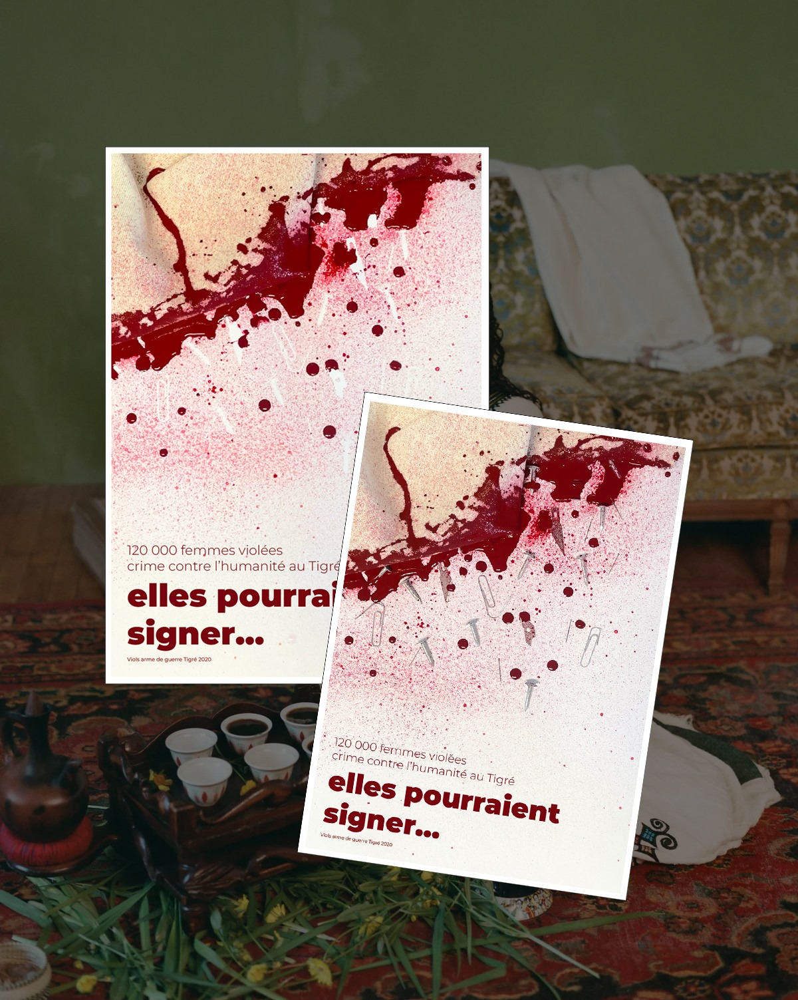
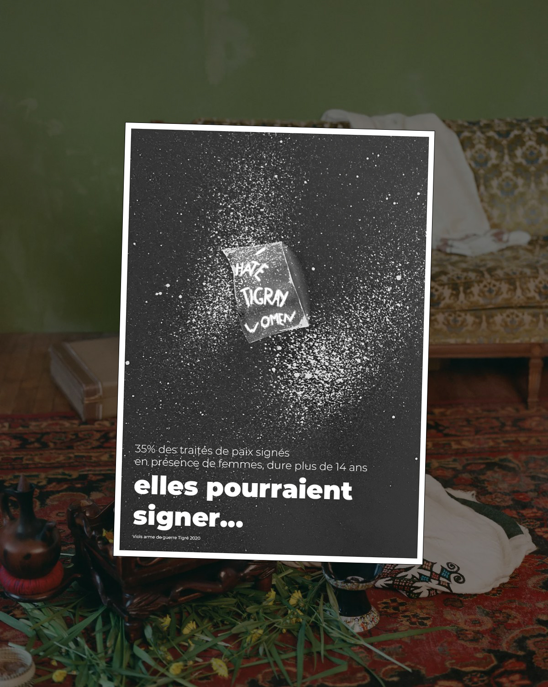
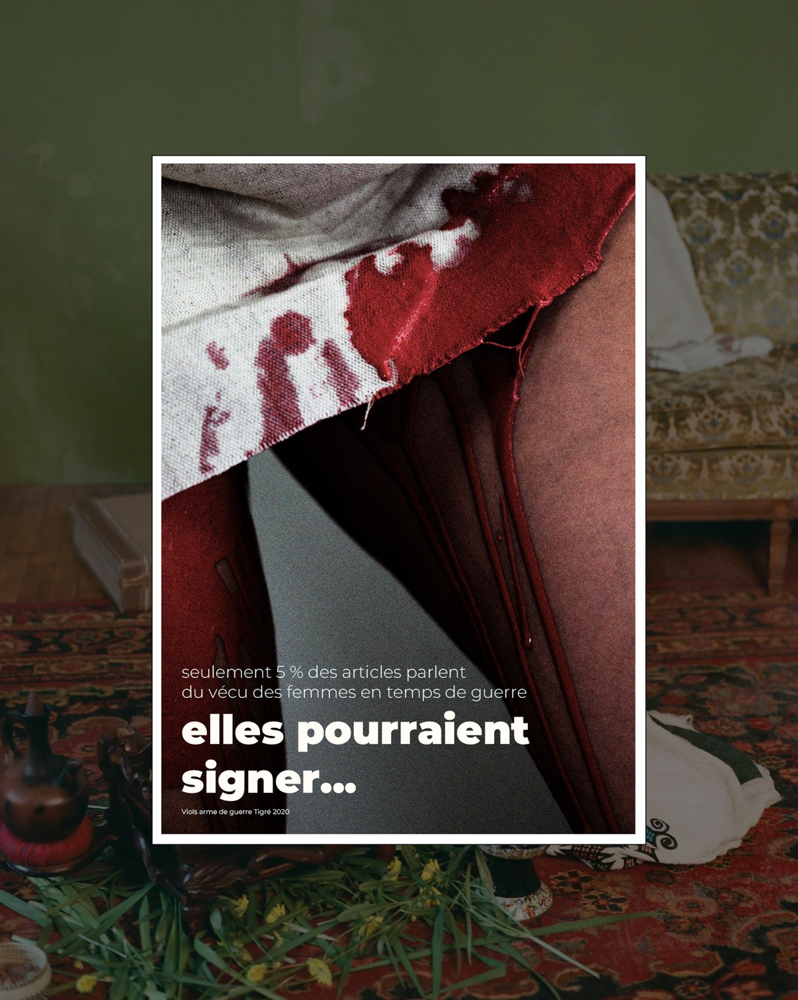
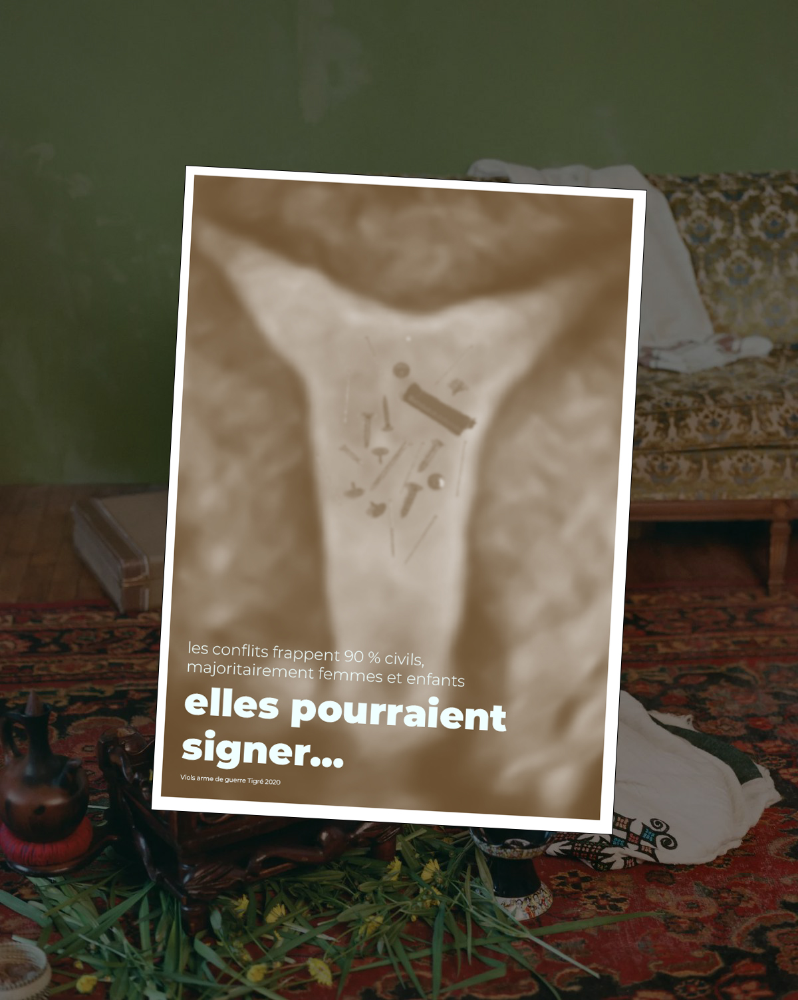

Design engagé · Affiches militantes
Avertissement : violences sexuelles comme arme de guerre.
Elles pourraient
signer...
Une série d’affiches conçues pour les manifestations féministes, pour rendre visibles les violences sexuelles au Tigré et déplacer la honte du côté des agresseurs.

Le contexte
Rendre visible
une cause.
En novembre 2020, un conflit éclate au Tigré, dans le nord de l’Éthiopie. Des femmes et des filles subissent des violences sexuelles utilisées comme arme de guerre. Le reportage d’ARTE Tigré : viols, l’arme silencieuse rapporte une estimation d’au moins 120 000 femmes violées.
Ce projet est né de mon sentiment que cette cause restait trop peu visible dans l’espace public. En tant qu’étudiante en design social, je me suis posé une question : comment la rendre visible sans instrumentaliser la douleur ?


Mon intention
Faire voir.
Ôter la honte.
Donner une place à la cause
J’ai conçu cette série pour être utilisée en manifestation féministe : un support visuel pour faire exister cette parole dans l’espace public.
Déplacer la honte
La honte doit être du côté des agresseurs, jamais des survivantes. C’est le message que je souhaite porter à travers ces affiches.
Faire porter le message par les mots
Le mot, le vide et une typographie qui prend de la place structurent la série. Des images symboliques et des jeux de matière les accompagnent, avec l’intention de soutenir la parole sans représenter explicitement les violences.


Comment agir
Des affiches
à faire circuler.
Ces affiches sont faites pour être vues. Vous participez à une manifestation ou organisez un événement ? Écrivez-moi en message privé : je vous les transmets en haute qualité, en libre diffusion.
Me contacter pour recevoir les affiches ↗
Pour mieux comprendre la situation, je vous invite à découvrir le reportage Tigré : viols, l’arme silencieuse d’ARTE.
Voir le reportage ARTE ↗